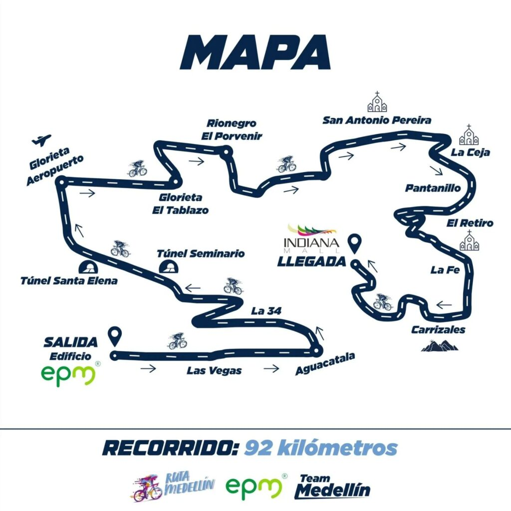

¿Quiénes somos?
Somos Rueda Libre, un negocio dedicado al alquiler de bicicletas
en Medellín. Queremos que residentes y visitantes disfruten de la
ciudad de una manera activa, cómoda y sostenible.
Creemos que cada recorrido puede convertirse en una aventura.
- Una forma saludable de explorar la ciudad.
- Libertad para recorrer Medellín a tu propio ritmo.
- Una alternativa de transporte amigable con el ambiente.
Nuestros servicios
1. Alquiler de bicicletas urbanas

Recorre las calles y los lugares emblemáticos de Medellín
con nuestras bicicletas urbanas.
El alquiler incluye casco y candado
para que disfrutes de tu recorrido con mayor comodidad y
seguridad.
¡Explora la ciudad a tu propio ritmo!
2. Recorridos por rutas ciclísticas

Descubre paisajes, espacios verdes y caminos ideales para
disfrutar de una salida en bicicleta. Te ayudamos a elegir
una ruta según tu experiencia y tus preferencias.
Consulta las recomendaciones antes de salir
y prepárate para disfrutar del recorrido.
3. Alquiler para paseos en grupo
Comparte una experiencia diferente con tus amigos o familiares.
Nuestro servicio de alquiler para grupos te permite organizar
paseos y explorar Medellín en compañía.
¡Cada salida es una oportunidad para crear buenos recuerdos!
¿Cómo alquilar?
Sigue estos cuatro pasos para disfrutar de una bicicleta:
- Contacta a Rueda Libre para consultar la disponibilidad.
- Elige la bicicleta y el tiempo de alquiler que necesitas.
- Confirma las condiciones del alquiler con nuestro equipo.
- Recoge tu bicicleta y disfruta de tu recorrido por Medellín.
¿Listo para tu próxima aventura?
Reservar ahora